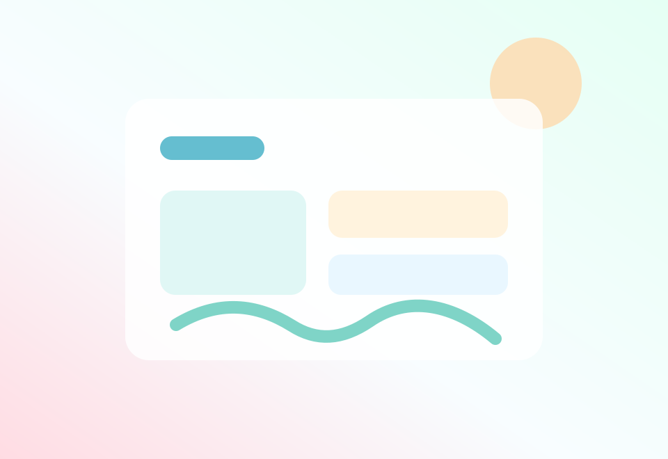

把想法做成可访问的网页
从静态页面开始，慢慢补齐部署、域名、内容维护和作品记录。
About
我正在搭建自己的个人网站，也在持续学习前端、设计和产品表达。比起堆满效果，我更在意页面是否清楚、舒服、能让人快速理解我是谁、做过什么、想做什么。
Now
从静态页面开始，慢慢补齐部署、域名、内容维护和作品记录。
用色彩、留白、层级和小动效制造记忆点，而不是让装饰抢走内容。
把完成过的练习、代码片段和设计探索沉淀成可展示的作品。
Selected Work
Web App / Notes
轻量笔记工具概念，强调快速记录、自然分类和安静的阅读体验。

Dashboard / Habit
个人工作流仪表盘，整合待办、习惯和灵感收集，适合日常复盘。
Gallery / Template
极简图片展厅模板，用柔和视觉突出内容本身，适合摄影或插画展示。
Skills
HTML / CSS
JavaScript
Python
UI Design
Git / GitHub
AI Tools
Trace